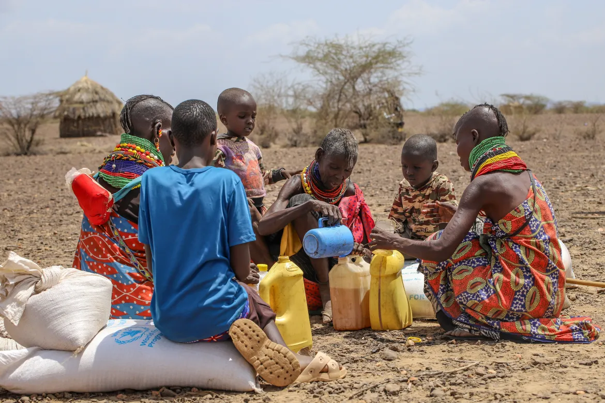
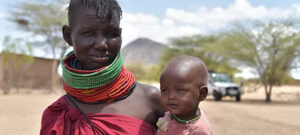

Every second you wait, a heart slows down.
In the far reaches of northern Kenya lies Turkana, a land both ancient and unforgiving. Its cracked earth and relentless sun whisper stories older than civilization itself—a place where the first humans once walked, shaping the dawn of humanity.
Yet today, Turkana is a crucible of survival, where modern life clashes with prehistoric conditions. Rivers vanish into dust, and every day is a battle against thirst and scarcity. What secrets does this harsh land hold, and how has it come to be a place where life clings on by a thread? The answers are as compelling as they are haunting.
Once fertile lands are now dust bowls. 800,000 pastoralists face a silent collapse, as their herds—and the futures of their children—disappear before their eyes.

Decades of shifting rains battered Turkana, but between 2023 and 2026, the climate delivered its final, brutal blow. This isn’t neglect or failure—it’s a warning from a world where extreme weather can strike anywhere. For Turkana, it struck hardest, leaving the land too hard even for a grave.
The Turkana are fierce desert warriors, but even the strongest cannot fight a changing climate alone. Look at the children, the elderly, the sick, the disabled—fierce hearts cannot replace water, pasture, and support. They don’t need pity; they need the lifelines the world’s shifts have stolen from them.

NGOs bring vital help and hope, but even their reach has limits. Funding runs out, resources are stretched, and not every community can be served. Turkana was no exception—here, the crisis ran ahead of support, leaving lives exposed despite the aid that did arrive.
Every donation matters. Some go to large charities with many operational layers, while others go straight to essential services—like fueling water trucks for communities in urgent need. Different paths, same goal: saving lives.
Even with government support, much remains undone. Turkana faces daily crises of hunger, drought, and economic strain—long before they ever reach headlines or trigger national disaster declarations. While the national treasury releases its budget once a year, local communities endure hardship every day. Promised reserves often fall short, and mismanagement by some officials worsens the struggle, even though many leaders work sincerely. For Turkana, survival can’t wait for politics or media attention—it is an urgent, unrelenting reality.
In some regions, promises are tied to politics. In the north, where voters are few and communities remote, those promises rarely reach the people. Here, aid from donors isn’t charity—it’s often the only lifeline that truly works.
Every drop of water, every handful of maize, every sachet of plumpy nuts is rationed to last months. The next community waits—because survival in Turkana cannot pause, and no one is meant to be left behind.
Mama Akiru lost her third daughter to hunger just days ago. “Now,” she whispers, “I only have two mouths left to struggle for… it is a relief, though it hurts like fire inside me.” Every day is a fight to stretch meager rations, each sip of water and every handful of maize weighed against the memory of a life lost.
Her sorrow is silent, yet unbearable—an echo of the cruel arithmetic of survival in Turkana.
A $4 bill can buy a coffee, a snack, or small treats where you are. In Turkana, the same $4 buys 11–13 sachets of Plumpy’Nut—enough to feed ten children for a full day. Just once, that small choice could turn into ten heartbeats kept alive.
We are building Solar Boreholes—a source of water that lasts beyond the next donation. Food meets immediate needs, but these boreholes create independence, a thriving ecosystem, and a future where communities sustain themselves. A legacy your support will be proud of, acknowledged for generations to come.
We turn “casualties” into “cultivators.” One solar borehole provides water for 500 people for a lifetime—fueling irrigation, growing food, and sustaining life. Water becomes more than survival; it starts a cycle of growth, nourishment, and opportunity, generation after generation.
Our leaders don’t hide behind offices. They are on the ground—dusty boots, open books, and digital ledgers—seeing every need, tracking every contribution, ensuring nothing gets lost in translation.
bc1p2n02wvj9jt9xk4d7m82fcevd86tkv4qn4mrhwz3fz8pnw4fawj0qe4vyr90x4da3b0b7f7e1092a07d3ff5c4e2594e14769197b0x4da3b0b7f7e1092a07d3ff5c4e2594e14769197bAs88HrE1NJ6mMMxWBNcRHuG9JVg3sjUjSvsqpgCVfNd8isaacfadhee@gmail.comjobisaacmaina22@gmail.comYou closed the book. They can't.